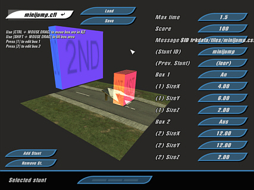

Location: [crashday]\tools\stuntedit

Interface of StuntEdit
StuntEdit is a tool designed to assign stunt bonus definitions to each track piece. The stunt information for each tile is stored in a related .cst-file.
In Crashday you can either achieve stunt bonuses by general motion of the car (e.g. simple jumps, flips, spins, good landings etc.) or by passing predefined stunt boxes in a certain time. These boxes are what you set with StuntEdit for each track piece.
Every
track piece can have as many stunts as you like. Each stunt definition consists of two stunt boxes and a maximum
time within the player has to reach the second stunt box after triggering
the first one. It might sound unrealistic, but with this easy system it is possible to nearly "detect" any stunt action you like.
An example can be seen on the top image. When the player triggers the first (red) stunt box (i.e. he hits the
jump), he needs to reach the second (blue) box in a certain time. Thus, the
score reward defined by these two boxes is only given when hitting the
ramp with a certain speed.
A stunt box is being triggered if the center point of a car passes the box, not a car's outline.
How does StuntEdit work
When starting StuntEdit, minijump.cfl is loaded by default. As you see, not the .cst-files are loaded but the .cfl-files. To load your own track piece you can either type its .cfl's name into the load dialog or, as you do with ShowCFL, open your .cfl-directly with StuntEdit.
Hitting the button “Add Stunt” creates a new stunt definition with default values. You can drag the two stunt boxes with your mouse. Their dimensions are typed into the related text fields to the right. The first three text fields are “Max time” - time in seconds to reach the second stunt box, “Score” - bonus score granted when completing the stunt and “Message” - the bonus message displayed on screen when stunt is completed.
In the lower right you see the “Stunts list”. If you have more than one stunt defined on your track piece, you can scroll through the stunts with this list (pressing the “arrow keys” or dragging with the mouse)
Stunt IDs
StuntEdit offers to assign every stunt definition a unique ID. If kept at “(none)” a random default ID will be generated in-game. By using unique IDs every single stunt definition is identified throughout the whole in-game level (just the same tiles share the same IDs). This offers some extended possibilities, especially between different track pieces:
You can define a certain “Previous Stunt” for a stunt definition. Only if this previous stunt was completed prior to the current stunt, the bonus is granted. To do this, type the ID of the stunt you want to be completed first into the “Prev. Stunt” input field.
Another assumption you can make is to only count a stunt if the previous stunt was NOT a certain action you specify. To do this, just type “![previous stunt]” into the “Prev. Stunt” input field (e.g. “!hugeJump”)
You can quit StuntEdit by pressing “Alt+F4”. Don't forget to save your stunt definitions before quitting.